Eventos tradicionais
Palco do Julinão do Santa Mônica, a quermesse anual que mobiliza grande parte dos moradores, além de feiras gastronômicas e artesanais.
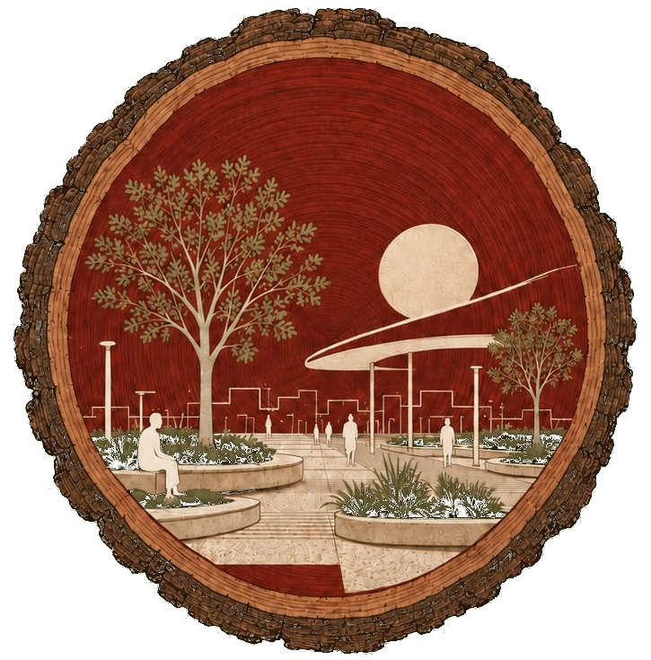
ECHINATAProjeto interdisciplinar · Uberlândia, MG
Estamos repensando a Praça Américo Ferreira de Abreu com acessibilidade, natureza e tecnologia. E a sua voz é parte do projeto.
Jornal da Praça
Eventos, convites e novidades da praça, direto no jornal.
História e convivência · 01
A Praça Américo Ferreira de Abreu fica no bairro Santa Mônica, na região Leste de Uberlândia, e é uma importante área de convivência, lazer e integração social para a comunidade.
Ela foi criada na década de 1970, período de forte expansão residencial do bairro.
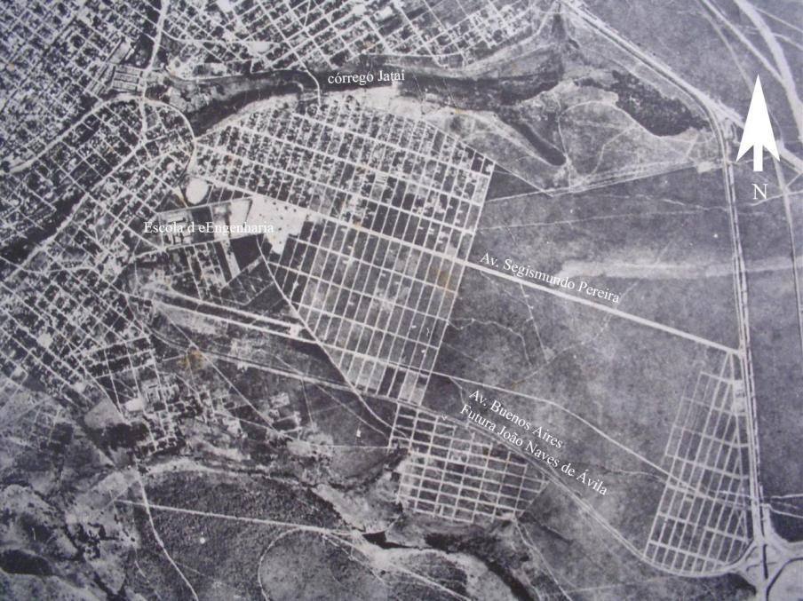
O homenageado
Pioneiro técnico do serviço público de Uberlândia e braço direito do prefeito Tubal Vilela. Atuou como datilógrafo e protocolista, foi nomeado Secretário da Prefeitura em 1933 e chefiou o Serviço do Patrimônio na década de 1940.
História e convivência · 02
Desde os primeiros anos, quando ainda era um campo de futebol de terra, o espaço é ponto de encontro. A praça sedia a Paróquia Santa Mônica e Santa Elena Guerra, fundada em 1980.
Palco do Julinão do Santa Mônica, a quermesse anual que mobiliza grande parte dos moradores, além de feiras gastronômicas e artesanais.
Campanhas de adoção do Centro de Zoonoses e serviços públicos itinerantes, como o Busão Social e o Procon Móvel.
Confecção dos tapetes de Corpus Christi e apresentações de teatro de rua.
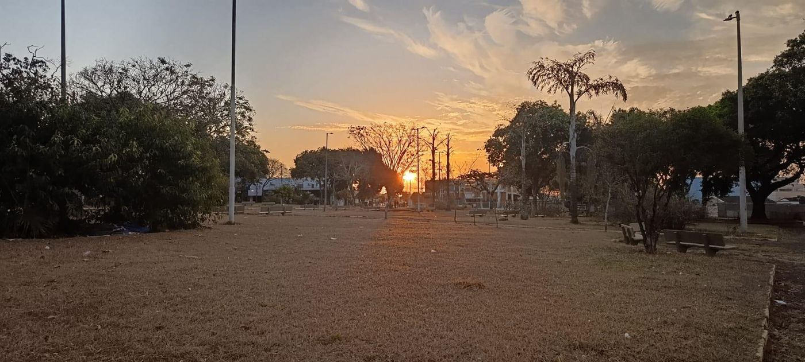
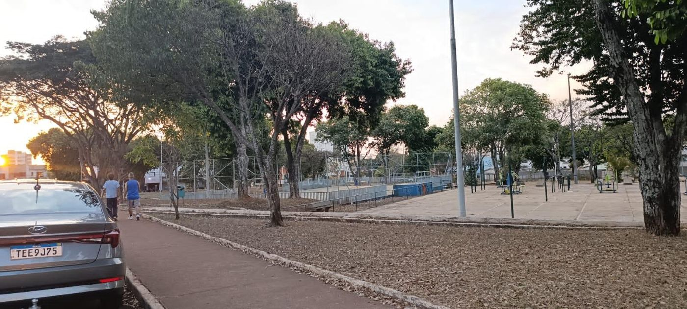
História e convivência · 03
A identidade da praça foi construída pelas histórias de quem a frequenta. Entrevistas com moradores de diferentes gerações mostram a importância afetiva do lugar.
SolidariedadeNo auge da pandemia, usou o espaço para preparar e distribuir comida aos moradores de rua da região.
Eduardo, 51 anos
RomancePediu a namorada em namoro sentado em um dos bancos da praça.
Matheus, 22 anos
JuventudeGuarda memórias dos encontros da juventude e das partidas na quadra.
André, 44 anos
SaudosismoLembram da época em que a praça era um simples ponto de encontro, sem asfalto, focado nas amizades e nos eventos da Igreja Católica.
Luiz, 74 anos, e Osvaldo, 55 anos
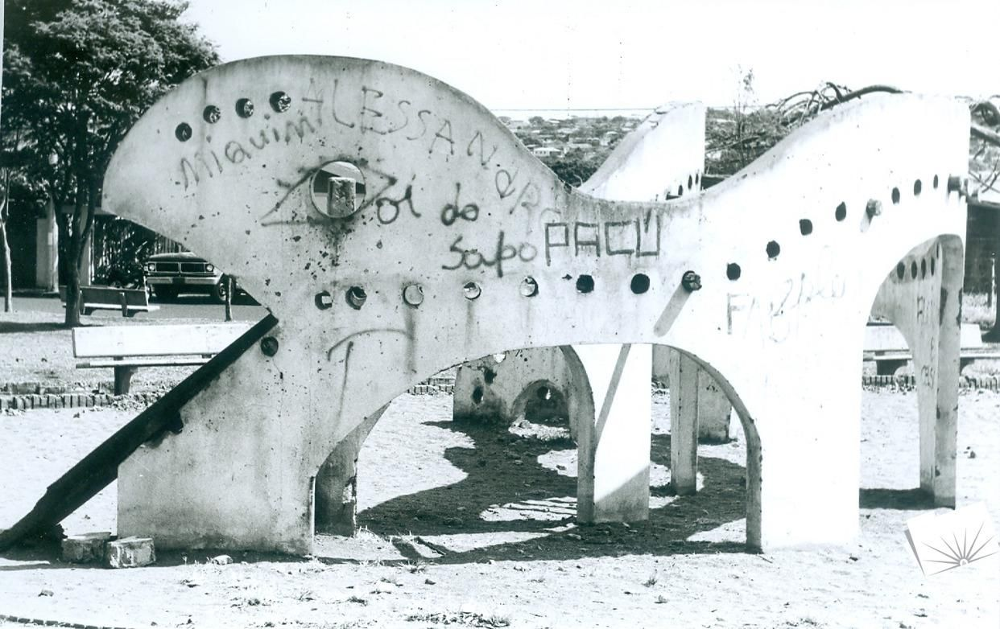
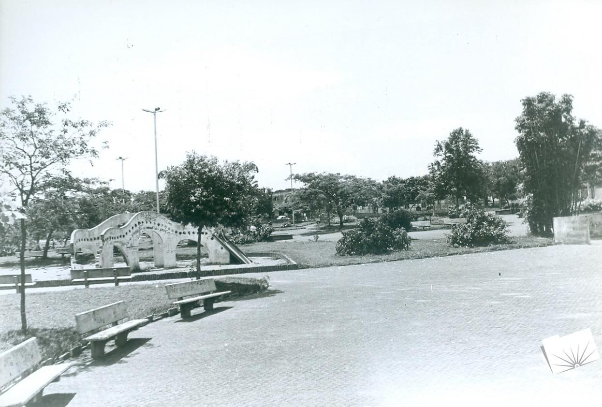
História e convivência · 04
Com o passar dos anos, o campo de terra deu lugar a áreas gramadas, quadras, brinquedos infantis e aparelhos de exercícios. A comunidade, porém, aponta necessidades reais de melhoria.
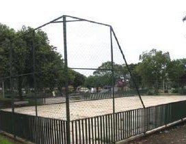
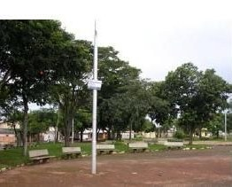
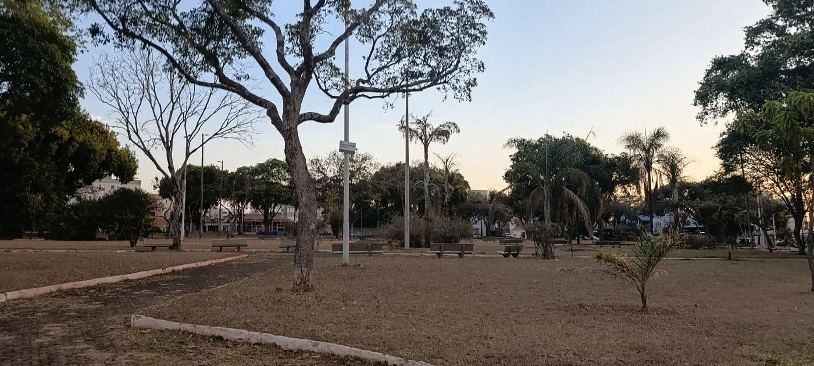
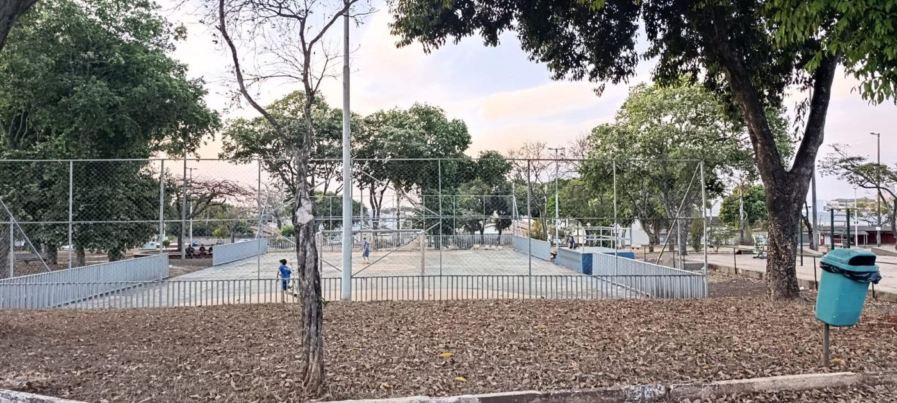
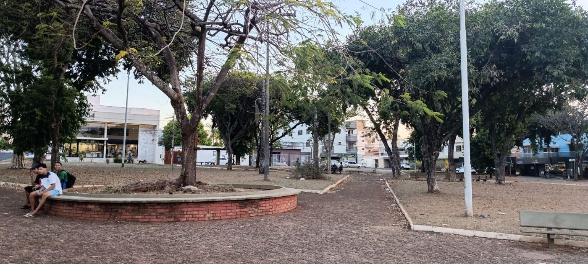
O relatório destaca o potencial da praça para projetos de automação urbana: iluminação inteligente, sensores de presença e monitoramento ambiental, para um espaço mais eficiente, seguro e sustentável para as próximas gerações.
Veja as propostas do projeto →O diagnóstico
Visitamos o local, mapeamos tudo e registramos o que precisa de cuidado. Estes são os principais pontos que o projeto quer resolver.
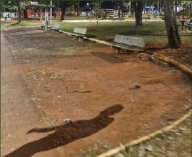
Em alguns trechos o caminho está sem revestimento, com terra exposta e desnível.
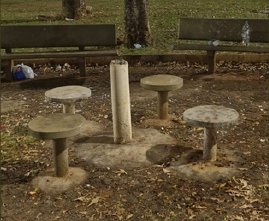
O mobiliário de convivência está danificado e pede reposição.
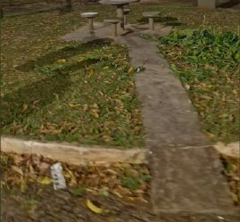
Rampas e caminhos que não seguem as normas técnicas, quando existem.
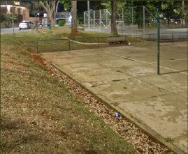
Piso e pintura em péssimo estado de conservação.
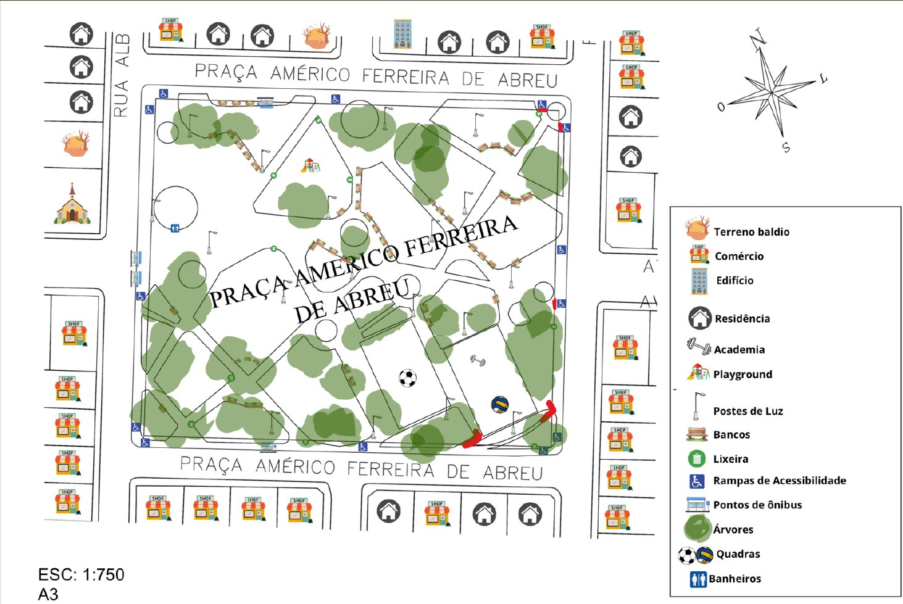
As propostas
Arquitetura, Engenharia Mecânica, Engenharia da Computação e Sistemas de Informação projetam juntas, em parceria com a Prefeitura de Uberlândia.
Novos pisos, calçadas mais largas e sem obstáculos, rampas conforme a norma, reorganização dos caminhos e da iluminação, banheiros acessíveis, bebedouros e mobiliário urbano novo.
Entrega: projeto de revitalizaçãoPergolado inteligente: estrutura em leque que abre sozinha nos momentos de muito sol, gerando sombra, e se recolhe quando o sol baixa. Placas de policarbonato com proteção UV.
Entrega: projeto mecânico 3DAutomação do pergolado com microcontroladores (Arduino), sensores climáticos para controle de sombreamento e infraestrutura de rede e Wi-Fi na praça.
Entrega: automação e conectividadeTotem digital e painel online com temperatura, umidade e fluxo de pessoas em tempo real, mais um canal direto para você avisar sobre problemas. É este site.
Entrega: plataforma e dashboardsA proposta em 3D
Gire, aproxime e toque nas letras para conhecer cada intervenção. Os números mostram onde fica cada planta do Jardim do Cerrado.
Carregando o modelo 3D 0%
Paisagismo
12 espécies escolhidas para dar sombra, cor e identidade à praça, a maioria nativa do Cerrado. O pau-brasil, no centro do pavilhão, é o símbolo da Echinata.
Imagens ilustrativas das espécies. Referências botânicas: Embrapa, manuais de arborização e Flora do Brasil.
Uberlândia, MGEdição digital
Convites, agenda de eventos e notícias da Praça Américo Ferreira de Abreu
Ouvidoria
Banco quebrado, lâmpada apagada, buraco no caminho, ideia de melhoria... Sua mensagem chega direto à equipe do projeto.
Participe
Escolha até 3 prioridades. Os resultados ajudam a equipe a decidir por onde começar.
Quem somos
Arquitetura e urbanismo sustentáveis. O nome vem do pau-brasil (Paubrasilia echinata), símbolo de origem, identidade e território. Nosso símbolo é um corte do tronco que guarda uma praça viva e humanizada no centro.
Simulação dos sensores
Assim vai funcionar o painel quando os sensores estiverem instalados: temperatura, umidade e movimento em tempo real, e o pergolado abrindo sozinho quando o sol aperta.
Dados simulados a partir do clima típico de Uberlândia. Regra do pergolado: abre quando a temperatura passa de 30 °C ou a radiação solar fica alta, e recolhe à noite ou com chuva. Os dados reais virão dos sensores da proposta de Engenharia da Computação.